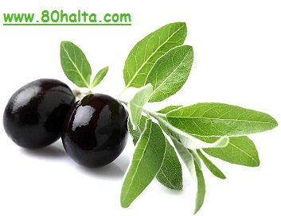

زەيتۇن مېيىنىڭ ﺗﯧﺒﺎﺑﻪﺕ ﻛﯩﺘﺎﺑﻠﯩﺮﯨﺪﺍ ﺑﺎﻳﺎﻥ ﻗﯩﻠﯩﻨﻐﺎﻥ ﺧﯘﺳﯘﺳﯩﻴﻪﺗﻠﯩﺮﻯ ﺋﺎﺳﺎﺳﻠﯩﻘﻰ ﮬﻪﺭ ﻗﺎﻳﺴﻰ ﺋﻪﺯﺍﻻﺭﻏﺎ ﻗﯘﯞﯞﻩﺕ ﺑﯩﺮﯨﺶ، ﻗﻮﻳﯘﻕ ﻳﻪﻟﻠﻪﺭﻧﻰ ﺗﺎﺭﻗﯩﺘﯩﺶ، ﺋﺎﻏﺮﯨﻖ ﺗﻮﺧﺘﯘﺗﯘﺵ، ﺗﯧﺮﻩ ﻗﯘﺭﻏﺎﻗﻠﯩﺸﯩﺸﻨﻰ ﺗﻮﺧﺘﯩﺘﯩﭗ ﻳﯘﻣﺮﺍﻧﻼﺷﺘﯘﺭﯗﺵ، تېرىنىڭ قىرىشىنى كېچىكتۈرۈش، ﺋﺎﺷﻘﺎﺯﺍﻧﻨﻰ ﻳﺎﺧﺸﯩﻼﺵ ﺩﯦﮕﻪﻧﺪﻩﻙ ﺑﻮﻟﯘﭖ ﺑﯘﻧﻰ 12 ﺑﺎﺭﻣﺎﻕ ﺋﯜﭼﻪﻱ ﻳﺎﺭﯨﺴﻰ، ﻗﻪﯞﺯﯨﻴﻪﺕ، ﺋﺎﺷﻘﺎﺯﺍﻥ ﺋﺎﺟﯩﺰﻟﯩﻖ ﻗﺎﺗﺎﺭﻟﯩﻘﻼﺭﺩﺍ ﮬﻪﺭ ﺧﯩﻞ ﻗﻮﺭﯗﻣﯩﻼﺭﻏﺎ، سالاتلارغا ئىشلىتىپ ﺋﯩﺴﺘﯩﻤﺎﻝ ﻗﯩﻠﯩﺪﯗ. ﺗﯧﺮﻩ ﻗﯘﺭﻏﺎﻗﻠﯩﺸﯩﺶ، باش كېپەكلىشىش، چاچ جانسىز، پارقىراقلىقىنى يوقۇتۇش، ئوزۇقلۇق يېتىشمەسلىك قاتارلىق ئەھۋاللاردا مايلاشقا ئىشلەتسە بولىدۇ. ﺑﻮﻏﯘﻡ ﺋﺎﻏﺮﯨﻘﻰ، پالەچ، ﺋﻮﻟﺘﯘﺭﻏﯘﭺ ﻧﯧﺮﯞﺍ ﺋﺎﻏﺮﯨﻘﻠﯩﺮﯨﺪﺍ ﺳﯩﺮﺗﯩﺪﯨﻦ ﻣﺎﻳﻼﭖ ﺋﺎﭘﺘﺎﭘﻘﺎ ﻗﺎﻗﻠﯩﻨﯩﺪﯗ. بۈگۈن بىز زەيتۇن مېيى ۋە ئۇنىڭ شىپالىرى ھەققىدە بىردەم پاراڭ سالىمىز!
ئېرتىش ۋە سىلىقلاش ئۈنۈمى ناھايىتى ياخشى بولغان نەرسە زەيتۇن مېيى بولۇپ ئۇنىڭ ياشلىق ۋە ساغلاملىقنى ئەسلىگە كەلتۈرۈشتىكى ئۈنۈمى ناھايىتى كۆرۈنەرلىك.بەدەن سۈپىتى ناھايىتى ياخشى بولغان يۇنانلىقلار زەيتۇن مېيىنى كەڭ تۈردە ئىشلەتكەن. ئۇلار زەيتۇن مېۋىسى زەيتۇن مېيى، ساپ ھاۋا ، قۇياش نۇرى ، چېنىقىش قاتارلىقلارغا تولىمۇ ئىخلاس قىلغان. زەيتۇن مېيىدا بەدەننى مايلاپ ئۇۋۇلىنىش ئارقىلىق تېرىدىكى قىرىشىشقا يۈزلەنگەن ھۈجەيرە-توقۇلمىلارنى يۇمشۇتۇپ، داغ چۈشۈش، تېرە بوشاپ كېتىشنىڭ ئالدىنى ئالغان. شۇ ئارقىلىق تېرىسىنىڭ پارقىراق، سۈزۈك، جەزبىدار بولىشىغا ئەھمىيەت بەرگەن.

زەيتۇن مېيى مول ئوزۇقلۇق قىممىتىگە ئىگە بولۇپ، ئۇ يەنە بەدەن ئىھتىياجلىق ھەر خىل ۋېتامىن ۋە مىنىرال ئوزۇقلۇقلارنى تەمىنلىگەندىن سىرت مېتابولىزمنى ئىلگىرى سۈرۈپ، ماددا ئالمىشىشنى ياخشىلايدۇ. مەيلى يەيدىغان پىششىق زەيتۇن بولسۇن ياكى چەكلەپ ئېلىنغان زەيتۇن مېيى بولسۇن، تېرىگە سۈركەپ قويسىمۇ قېرىشنىڭ ئالدىنى ئېلىپ مۇسكۇللارنى كۈچلۈك، ئەۋرىشىم قىلىدۇ. زەيتۇن مېيىنى بەدەنگە سۈركەش ماشىنىنى مايلىغانغا ئوخشاش بولۇپ زىيادە ئۇپراشنىڭ ئالدىنى ئېلىپ ئۆمۈرنى ئۇزارتىدۇ.
زەيتۇن مېيى ئىستېمال قىلغاندا ساغلاملىق ۋە ھاياتىي كۈچىنى ئاشۇرۇپلا قالماي، بەدەنگە سۈركەپ بەرسىمۇ ئادەمنى باشقىچە تېتىكلەشتۈرىدۇ ھەمدە مۇسكۇل تېرىلەرنى تېخىمۇ ئېلاستىكىلىققا ۋە ئەۋرىشىملىككە ئىگە قىلىدۇ. ئۇ بەدەنگە تېزلا سۈمۈرۈلۈپ مۇسكۇللار ۋە بەدەندىكى ھەرقايسى بوغۇملارنى سىلىقلايدۇ. زەيتۇن مېيىنى بەدەننىڭ سىرتىغا ئىشلىتىشنىڭ ئەڭ ياخشى پەيتى، ئىلمان سۇدا يۇيۇنۇپ بولغان چاغ بولۇپ، زەيتۇن مېيى بىلەن بەدەننى مايلاپ ئۇۋىلاش كېرەك. ھەپتىسىگە بىر ياكى ئىككى قېتىم بولسا بولىدۇ. يىرىك لۈڭگە بىلەن بەدەننى سۈرتۈپ تامامەن قۇرغاندىن كېيىن، زەيتۇننى قول بارماقلىرى ئارقىلىق بەدەننى، بولۇپمۇ بوغۇملار ئەتراپىنى مايلاش كېرەك. ئۇلىغان چاغدا ئىمكانقەدەر بەكرەك كۈچەش لازىم، شۇندىلا بەدەن تولۇق سۈمۈرەلەيدۇ. تېرە ئۈستىدە قېپقالغان زەيتۇن مېيىنى يۇمشاق لاتا ياكى لۆڭگە بىلەن پاكىز سۈرتىۋەتسە بولىدۇ.

ئۆزىنى ئۇۋىلاشنىڭ سالامەتلىكى ۋە كەيپىياتنى تەڭشەشكە بولغان پايدىسى ھەققىدە مۇتەخەسسىسلەرنىڭ ئۆزگىچە قاراشلىرى باركەن، تايىنلىق زەيتۇن مېيىنىڭ شىپالىق رولىغا قوشۇپ قانداق ئۇۋىلىنىشنىمۇ ئورتاقلىشىۋېتەي سىلەر بىلەن.كىشىلەر ئۇۋىلاش ھۈنىرىگە پىششىق بولغان ئۇۋىلاش ئۇستىلىرىغا ئۆزىنى ئۇۋۇلىتىدۇ، ئەمەلىيەتتە ئەڭ ياخشى ئۇسۇل ئۆزىنى ئۆزى ئۇۋۇلاش بولۇپ، بۇ ئارقىلىق ئۇۋۇلاشتىن ئوبدان ھوزۇر ئالغىلى بولۇپلا قالماي، يەنە بەدەننى چېنىقتۇرغىلى بولىدۇ، ھەر ۋاقىت يادىڭىزدا بولسۇنكى ئۇۋىلاش سىزگە ساغلاملىق ھاياتىي كۈچ ۋە ياشلىق جەزبىسى ئېلىپ كېلىدۇ، سىزدىكى مۇشۇنداق روھىي ھالەتلا سىزنى ئۇۋىلاشتىن تولۇق مەنپەئەتلەندۈرەلەيدۇ، بىلىشىڭىز كېرەككى قانچە تۈجۈبىلەپ ئۇۋىلىسىڭىز ياشلىقىڭىز ۋە ھاياتىي كۈچىڭىزنى شۇنچە ئۇرغۇتالايسىز، ھەرقانداق مەشىق سىزنى ماغدۇرلاندۇرۇپ سىزگە كۈچ قۇۋۋەت ئاتا قىلىدۇ.
مۇتەخەسىسلەرنىڭ گىپى تۈگىدى، ئۇلار سەل مۇبالىغە قىلىۋەتكەندەك تۇيۇلغان بىلەن ئەگەر شارائىتىڭلار بولسا سىناپ بېقىڭلار، ئادەتلىنىپ قىلىشىڭلار مومكىن!/::)

ئەمدى زەيتۇن مېيىنى يېسەك قايسى ئۇسۇلدا يەيمىز، قانداق تاماقلارنى ئېتىپ يېسەك بولا دېگەن توغرىسىدا سۆزلەپ باقاي.
بىز ئادەتتە زەيتۇن مېيىدا پولۇ ئىتىپ يەيتتۇق. پولۇنى زەيتۇن مېيىدا ئېتىپ دۈملەيدىغان ۋاقىتتا بىر چىمدىم كەلگۈدەك زەپەنى سېپىۋەتسەك، ئاي…ھاي… پولۇ ھەقىقەتەن ئوخشايدۇ. ئىلمىي ئوزۇقلىنىش پروگراممىسىنى باشلىغاندىن كىيىن ئانچە-مۇنچە زەيتۇن مېيىدا كۆكتاتلاتنى قورۇپ يېدۇق. بەزىدە سالاتقا تېمىتتىم.
گەرچە زەيتۇن مېيىدا تويۇنغان ماي كىسلاتاسى يوق، ئىنتايىن ساغلام ماي ھېسابلانسىمۇ ﺗﯜﺭﻙ ﻏﯩﺰﺍ ﻣﯘﺗﻪخەسىسىلىرى ”ﺯﻩﻳﺘﯘﻥ ﻳﯧﻐﯩﻨﻰ ﻗﯩﺰﯨﺘﺴﺎ ﺑﻮﻟﻤﺎﻳﺪﯗ. ﺑﻪﺩﻩﻧﮕﻪ ﭘﺎﻳﺪﯨﻠﯩﻖ ﺗﻪرﻛﯩﭙﻠﻪﺭ، ﻧﺎﺯﯗﻙ ﯞﯦﺘﺎﻣﯩﻨﻠﻪﺭ ﺗﯩﺰﻻ ﻛﯚﻳﯜﭖ، ﺋﯚﻟﯜﭖ ﻗﺎﻟﯩﺪﯗ. ﺯﻩﻳﺘﯘﻥ ﻳﯧﻐﯩﻨﻰ ﺧﺎﻡ ﻳﯧﻴﯩﺶ ﭘﺎﻳﺪﯨﻠﯩﻖ. ﺋﻪﯓ ﻳﺎﺧﺸﯩﺴﻰ ﺧﺎﻡ ﺳﻪﻱ، ﺳﺎﻻتقا ﺋﯩﺸﻠﻪﺗﻜﻪﻥ ﺗﯜﺯﯛﻙ“ دەيدىكەن.
{kind=link}

كۆكتاتلىق قىيمىلارغا زەيتۇن مېيى قۇيۇپ ھەر خىل دولمىلارنى پۇشۇرىدىكەن. (دولما – قاپاق لازا، بەرەنگە، پىدىگەنلەرنىڭ ئىچىنى تازىلاپ قىيما بىلەن تولدۇرۇپ ھوردا پۇشۇرىدىغان تاماق، بۇ تاماق ئىلمىي ئوزۇقلىنىش پىروگراممىسىغا بەك ماس كىلىدىغان بولۇپ خانىملار سىناپ باققايسىلەر! ) تال غازىڭى سارمىسىغىمۇ زەيتۇن مېيى قۇيىدىكەن. بۇ تاماقمۇ ئوزۇقلىنىش پروگراممىسىغا ماس كىلىدىغان ئىسىل تاماق بولۇپ سەل تۇرۇپ تاماق ئىتىش ئۇسۇلىنى، تاماقنى سۈرەتلىرىنى يوللاپ بىرىمەن.
خوش، ئوزۇقلىنىش توپىمىزدا زەيتۇن مېۋىسى يەپ بىرىشنى كۆپرەك تەۋسىيە قىلىپ قالدىم، چۈنكى ئۆزۈم يېيىشكە ئامراق ھەم پايدىسىنى كۆرگەنلىكتىن ئەمەس. /::D
زەيتۇن مېيى ياكى زەيتۇن مېۋىسىمۇ ساتمايمەن بولمىسا/:B-)
ئالدىنقى باسقۇچ ئىلمىي ئوزۇقلىنىش توپىمىزدا ئوزۇقلىنىش ئادىتىنى ئۆزگەرتكەندىن كىيىن بەدەنگە سوغۇق كەلگەن، خام كۆكتاتلار ئاشقازانغا ياقمىغان دېگەندەك ئىنكاسلار كۆپرەك بولدى.
زەيتۇن مېۋىسىنىڭ تەبئىتى ئىسسىق، ئوزۇقلۇق مول، ئاشقازان-ئۈچەي خىزمىتىنى ياخشىلاپ مىتابولىزىمنى ياخشىلايدىغان، ھەزىمنى ئوزۇقلۇقلارنىڭ سۈمۈرلىشىنى تېزلىتىدىغان تەسىرى بولغاچقا ھەتتا ئاشقازان ياللۇقى، ئاشقازان 12 بارماق ئۈچەي ياللۇقى بار كىشىلەرمۇ زەيتۇن يەپ كۆنگەندىن كىيىن ياخشىلىنىپ كەتكەن ئىنكاسلارنى ئاڭلىدىم.
خام يېگىلى بولىدىغان كۆكتاتلارنى زەيتۇن قوشۇپ يېسەك سالات ھەم تەملىك ھەم ئاشقازانغا بېسىم بولمايدىكەن. بۇ ئەھۋال ئاشقازىنى ئاجىزلارغا بەك ياقىدۇ.

زەيتۇن قەۋزىيەتنى راۋانلاشتۇرىدۇ. زەيتۇننىڭ تەركىبىدە ۋېتامىن س،ې دېگەندەك تېرە توقۇلمىلارنىڭ ساغلام، چىرايلىق توقۇلىشىغا تۈرتكە بولىدىغان تەركىبلەر مول بولۇپ ئالمىنىڭ شۇ خىل تەركىبىدىن 10-20 ھەسسىگىچە كۆپ بولىدىكەن.
دېمەك شارائىت بولسا زەيتۇن يېيىشكە ئادەتلەنسەك ساغلام ھەم گۈزەل بولىشىمىزغا كۆپ پايدىلىق دېگەن گەپ.
بازاردا مەن بىلىدىغان زەيتۇنلاردىن قىزىل زەيتۇن، قارا زەيتۇن، يېشىل زەيتۇن دېگەندەك تۈرلىرى بار ئىكەن. ئوزۇق جەھەتتە يېشىلى بىلەن قىزىلىنىڭ يۇقۇرىمىش. لىكىن تەم جەھەتتە، ئىسسىقلىق تەبئىتى جەھەتتە قارا زەيتۇن تەملىك تۇيۇلىدىغان بولغاچقا مەن ئادەتتە قارا زەيتۇن يەيمەن.

يېشىل زەيتۇن چۈچۈمەل بولۇپ غورىدەك تەمى بار، بۇنىڭ تەبئىتى بەلكىم سوغۇققا مايىل بولىشى مومكىن. لىكىن يېشىل زەيتۇننىڭ ۋېتامىن س تەركىبى يۇقۇرى بولارمىش.
قارا دېڭىز، ئىگەي دېڭىزى بويلىرىدىكى كىشىلەرنىڭ ساغلام ۋە ئوزۇن ئۆمۈر كۆرۈشىنى مۇشۇ زەيتۇن بىلەن بىلىق يېگەنلىكىدىن بولغان دەپ قارايدىكەن. كۈندە يەتتە تال زەيتۇن يەيمىش/::g

- مۇھەممەتتۇرسۇن زۇنۇن
تىلىفۇن ۋە ئۈندىدار نۇمۇرى: 13565662787
80خالتا بلوگى، ئىلمىي ئوزۇقلىنىش ئۈندىدار توپىدىكى بۈگۈنكى پاراڭلار!